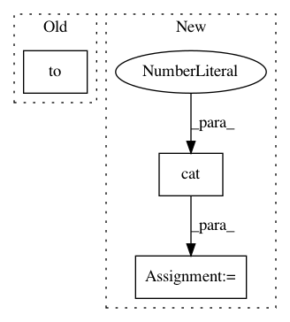

e60669c5aa467d5c11a508c01b37c4ed8e352fa6,torch_geometric/nn/conv/supergat_conv.py,SuperGATConv,forward,#SuperGATConv#Any#Any#Any#Any#,159
Before Change
// X, Y for the self-supervised task
self.att_with_neg_edges = att_with_neg_edges
num_neg_edges = att_with_neg_edges.size(0)
att_label = torch.zeros(num_neg_edges).float().to(x.device)
att_label[:pos_edge_index.size(1)] = 1.
self.att_label = att_label
if self.concat is True:
After Change
return_logits=True,
)
self.att_x = torch.cat([pos_att, neg_att], dim=0)
self.att_y = self.att_x.new_zeros(self.att_x.size(0))
self.att_y[:pos_edge_index.size(1)] = 1.
if self.concat is True:
In pattern: SUPERPATTERN
Frequency: 3
Non-data size: 3
Instances
Project Name: rusty1s/pytorch_geometric
Commit Name: e60669c5aa467d5c11a508c01b37c4ed8e352fa6
Time: 2021-02-15
Author: matthias.fey@tu-dortmund.de
File Name: torch_geometric/nn/conv/supergat_conv.py
Class Name: SuperGATConv
Method Name: forward
Project Name: rusty1s/pytorch_geometric
Commit Name: 69dd0827d09eae0b4e6b95df854b2814175c9248
Time: 2019-04-10
Author: matthias.fey@tu-dortmund.de
File Name: torch_geometric/nn/models/signed_gcn.py
Class Name: SignedGCN
Method Name: create_spectral_features
Project Name: ray-project/ray
Commit Name: d5604eaba321c11c1b9616c283262c4ddea55049
Time: 2020-12-21
Author: sven@anyscale.io
File Name: rllib/models/torch/modules/relative_multi_head_attention.py
Class Name: RelativeMultiHeadAttention
Method Name: forward